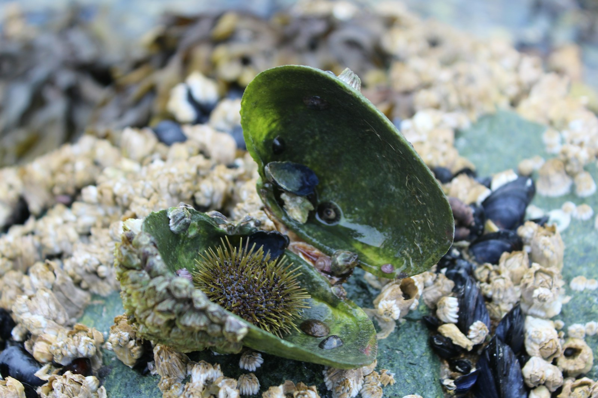
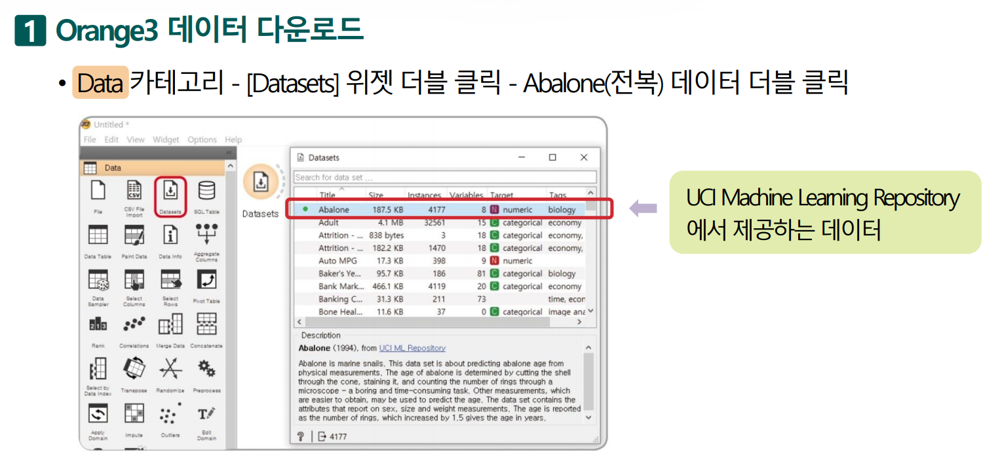
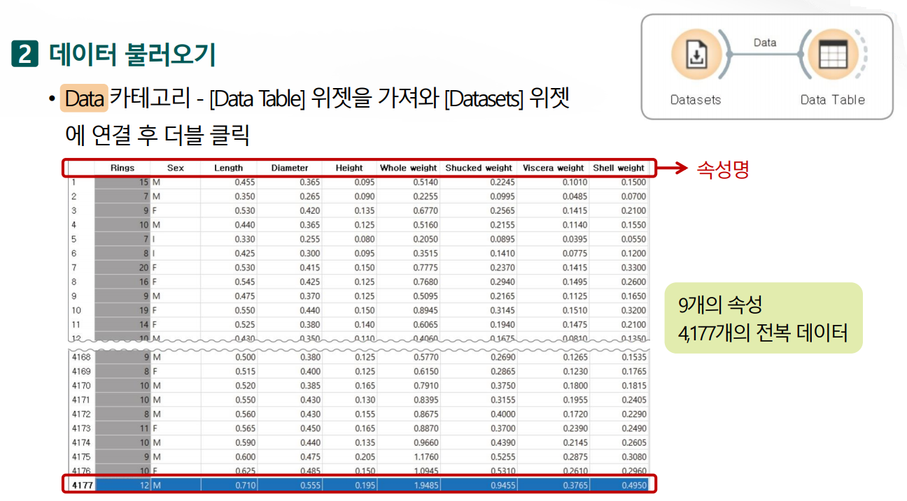
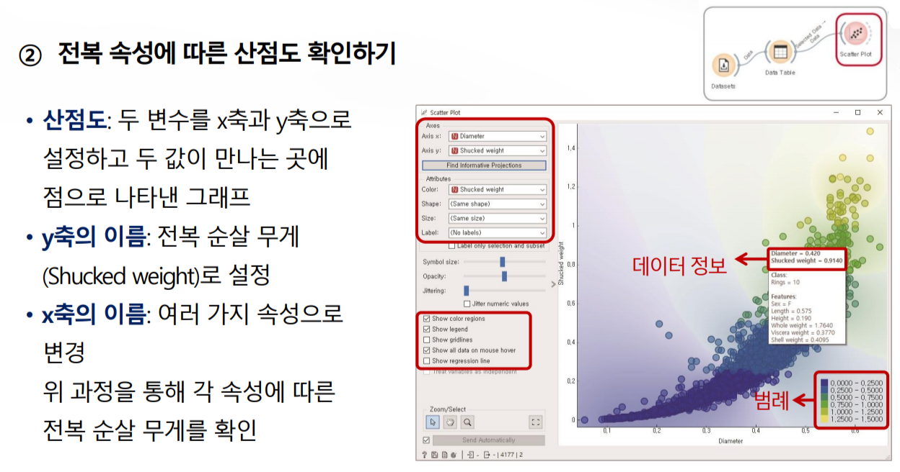
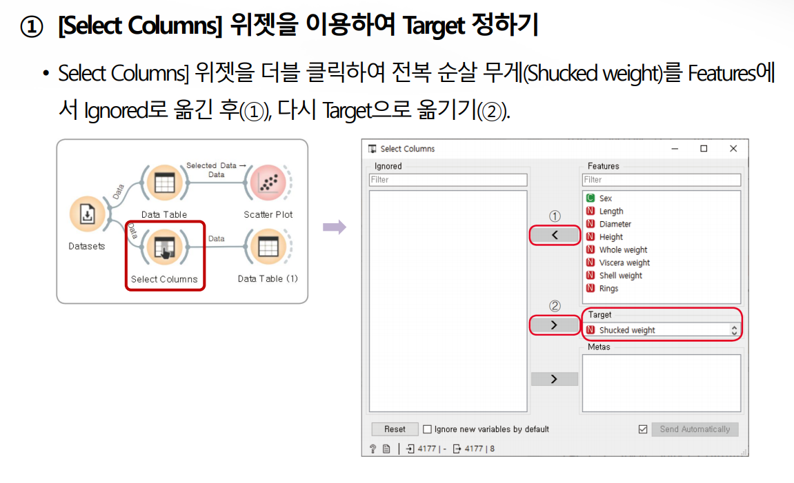
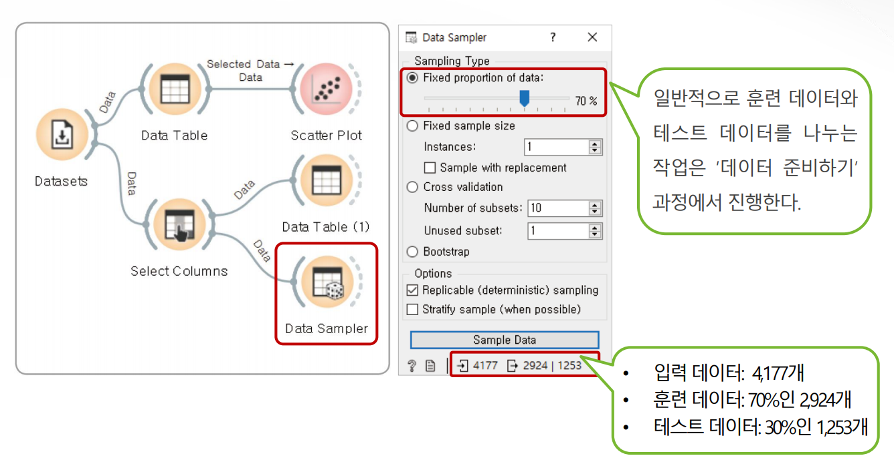
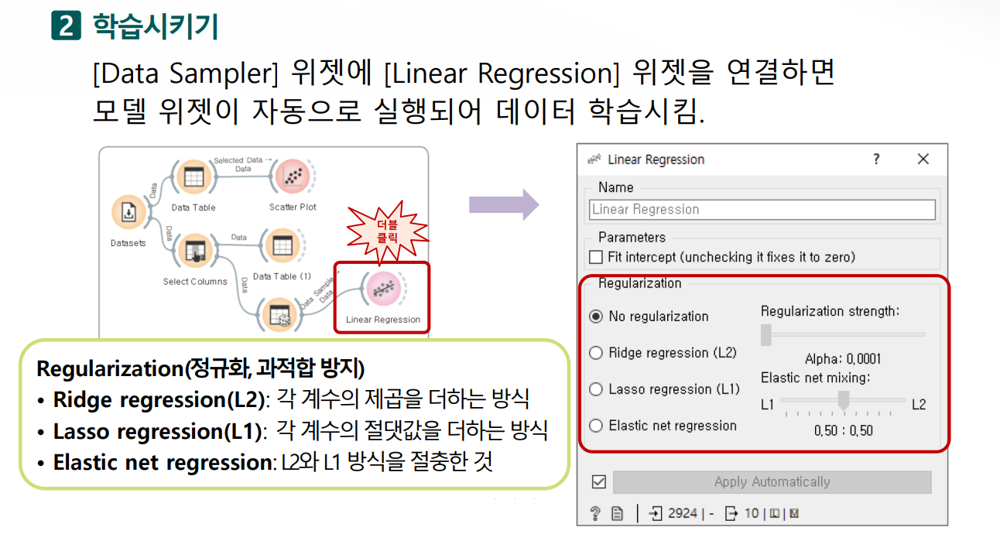
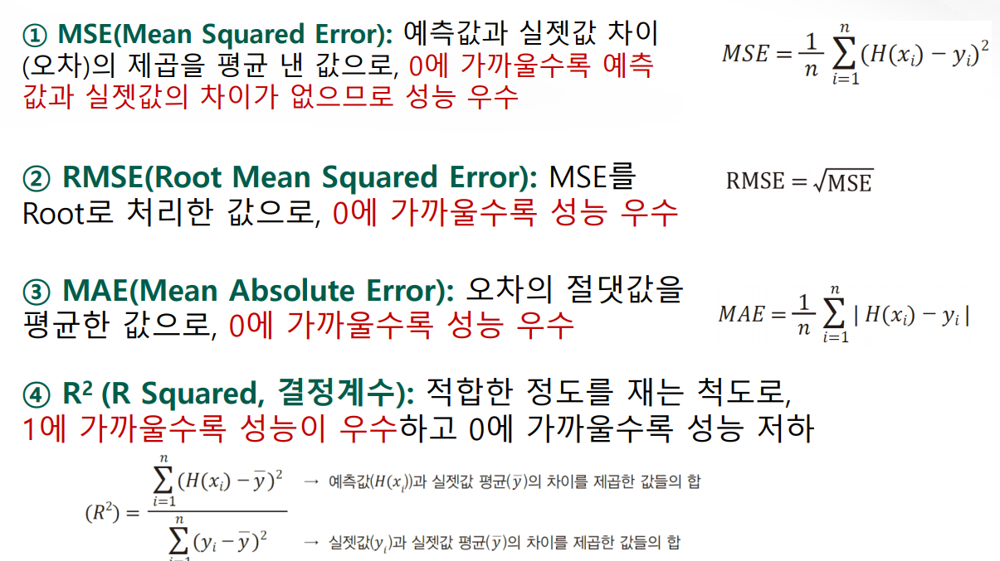

[10차시_오렌지3] 전복 순살 무게는?
오렌지3 설치
Orange3란?

| 주제 | 주요 내용 |
|---|---|
| 개요 | • 슬로베니아 류블랴나 대학교 생물정보학 연구실에서 개발한 오픈소스 도구 • 파이썬(Python) 기반의 노코드(No-Code) 데이터 분석 및 머신러닝 패키지 • 드래그 앤 드롭 방식의 위젯 연결형 비주얼 프로그래밍 환경 제공 |
| 탄생 | • 개발 계기: 연구실 내 생물정보학 데이터 분석 및 학생 교육 • 이름 유래: 친근하고 직관적인 도구 이미지를 전달하기 위해 '오렌지'로 명명 |
| 장점 | • 인터랙티브 시각화: 특정 데이터 선택 시 연결된 위젯에 실시간 연동 처리 • 머신러닝 흐름 파악: 전처리, 모델링, 평가의 파이프라인 구조 직관적 이해 • 확장성: 텍스트 마이닝, 이미지 분석 등 전용 애드온 설치 지원 |
| 단점 | • 처리 한계: 메모리 기반 동작으로 인한 빅데이터 분석 시 성능 저하 • 배포 한계: 자동화 파이프라인 구축 및 웹 서비스, API 배포 불가능 • 세부 제약: 파라미터 미세 조정 및 커스텀 알고리즘 적용 제한 |
Orange3 프로그램 (★ 현재 설치되어 있음.)
- 시작 메뉴 검색: 윈도우 작업표시줄의 시작 버튼(또는 검색 창)을 누름.
- Anaconda Prompt 검색:
Anaconda Prompt를 검색함.
- 프로그램 실행: 검색 결과에 나오는 검은색 터미널 아이콘의 프로그램을 클릭하여 실행함.
- 이 프롬프트 창이 열리면
(base) C:\Users\...>와 같은 메시지가 표시됨.
- Anaconda Prompt)을 열고 전용 가상환경을 생성 및 활성화함.
conda create -n orange3 python=3.10
conda activate orange3- Conda 채널 등록 및 Orange3 설치
conda config --add channels conda-forge
conda config --set channel_priority strict
conda install orange3- 오렌지3 실행
orange-canvas[실습] 전복 순살의 무게를 맞혀 봐.
















| 분류 | 대상 데이터 | 역할 및 이유 |
|---|---|---|
| Data Sample | 훈련 데이터 (Train Data) | • 모델(Linear Regression) 패턴 학습 목적 • 예측 평가용 데이터로 사용 시 결과 왜곡 발생 |
| Remaining Data | 테스트 데이터 (Test Data) | • 학습에 미포함된 미지의 데이터로 모델 성능 평가 • 과적합(Overfitting) 방지: 단순 암기 여부 검증 • 평가 객관성 확보: 학습 데이터 재사용 시 발생하는 평가 편향 제거 • 실전 환경 모사: 실제 운용 환경과 동일한 조건 제공 |



[추가 개별 활동] 학번별로 부여된 과제를 추가로 진행하기
| 학번 | 과제 주제 및 오렌지3 수행 내용 |
|---|---|
| 01 | 회귀 알고리즘 4종 비교: Linear Regression 외에 Tree, Random Forest, KNN을 Test & Score 위젯에 동시 연결하여 4개 평가지표 비교하기 |
| 02 | 특성 중요도 분석: Rank 위젯을 연결해 전복 순살 무게 예측에 가장 큰 영향을 미치는 변수 Top 3 탐색하기 |
| 03 | 독립변수 제어 분석: Select Columns 위젯으로 껍질 무게, 전체 무게 등 특정 변수를 하나씩 제외하며 모델 정확도() 변화 관찰하기 |
| 04 | 살수율 변수 생성: Feature Constructor 위젯으로 (순살 무게 / 전체 무게) 파생 변수를 만들어 새로운 예측 모델 구축하기 |
| 05 | 예측 오차 시각화: Predictions 위젯과 Scatter Plot을 연결하여 X축을 '실제 순살 무게', Y축을 '예측 순살 무게'로 놓아 오차가 큰 데이터점 찾아내기 |
| 06 | 이상치 제거 전후 비교: Outliers 위젯으로 극단값을 제거하기 전과 후의 점수 및 MSE 개선율 비교하기 |
| 07 | 학습/테스트 데이터 비율 실험: Data Sampler 위젯으로 Train:Test 비율을 5:5, 7:3, 9:1로 변경하며 평가 지표의 변화 관찰하기 |
| 08 | Cross-Validation 적용: Test & Score 위젯에서 K-fold Cross Validation(k=5, 10)을 적용해 데이터 분할에 따른 성능 안정성 확인하기 |
| 09 | 성별(Sex)에 따른 회귀 분석: Data Sampler 또는 Select Rows로 수컷, 암컷, 유체(Infant) 데이터를 분리해 각각의 순살 무게 예측 모델 만들기 |
| 10 | 상관관계 산점도 분석: Scatter Plot 위젯에서 전체 무게와 순살 무게 간의 상호작용 및 분포 시각화하기 |
| 11 | 나이(Rings) 예측 회귀: 타겟(Target) 변수를 '순살 무게'에서 전복의 나이를 나타내는 'Rings(나이테)'로 변경하여 회귀 모델 새로 만들기 |
| 12 | 전복 크기 분류 문제로 전환: Continuize 또는 Discretize 위젯으로 순살 무게를 '대/중/소' 3단계 범주로 만들어 Decision Tree 분류 모델 구성하기 |
| 13 | Lasso / Ridge 회귀 비교: Linear Regression 속성 설정에서 L1(Lasso)과 L2(Ridge) 규제를 각각 적용해 오버피팅 방지 효과 확인하기 |
| 14 | k-Means 군집화: k-Means 위젯으로 전복들을 군집(Cluster)화한 뒤, 각 그룹별 평균 순살 무게 차이 비교하기 |
| 15 | 의사결정나무 시각화: Tree Viewer 위젯으로 전복 순살 무게가 특정 값 이상이 되기 위한 조건문(If-Then Rule) 추출하기 |